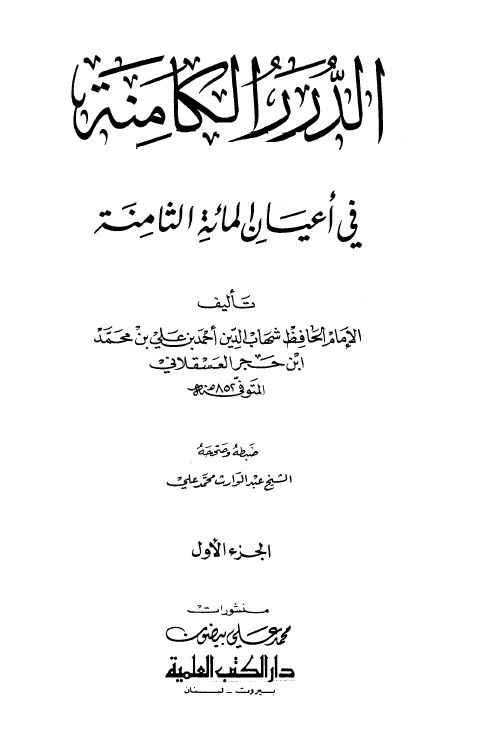

Downloads need an internet connection.
الدرر الكامنة في أعيان المائة الثامنة- ط العلمية
Authors: أحمد بن علي بن حجر العسقلاني
Editors: عبد الوارث محمد علي
Publishers: دار الكتب العلمية
**▫️ العنوان: الدرر الكامنة في أعيان المائة الثامنة- ط العلمية** ▪️ المؤلف: #أحمد_بن_محمد_بن_علي_بن_حجر_العسقلاني ▫️ المحقق: #عبد_الوارث_محمد_علي ▪️ الناشر: #دار_الكتب_العلمية ▫️ تاريخ النشر: 1418هـ 1997م ▪️ بلد النشر: بيروت، #لبنان ▫️ الطبعة: 1 ▪️ عدد الأجزاء: 4 ▫️ الصفحات: 1590 ▪️ نوع الوعاء: #كتاب ▫️ التصنيف الرئيسي: #التراجم_والأعلام ۪